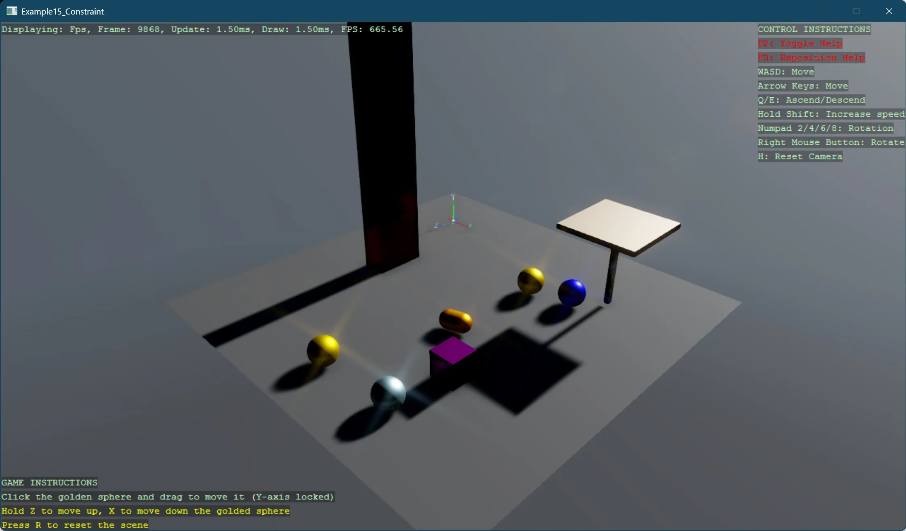

Various constraints
This example demonstrates how to implement and use physics constraints in Stride using the BepuPhysics engine. The sample showcases four different constraint types:
- DistanceLimit: Connects two spheres with minimum and maximum distance limits, allowing them to move freely within that range but preventing them from getting too close or too far from each other
- DistanceServo: Links two spheres with a target distance and spring settings, actively pulling or pushing to maintain the specified separation
- BallSocket: Creates a pivoting joint between a static foundation and a platform, allowing rotation around a connection point similar to a ball-and-socket joint
- PointOnLineServo: Restricts cubes to slide along vertical lines while maintaining their orientation, creating two stacks of cubes that can only move up and down
The example features interactive elements where you can:
- Drag a golden sphere horizontally with the mouse while adjusting its vertical position using the Z and X keys
- Click on cubes in the vertical stacks to remove them, causing cubes above to fall
- Reset the entire scene by pressing R
This demonstrates how constraints can be used to create complex physical behaviors with controlled degrees of freedom. The example illustrates important physics concepts like servo constraints with spring settings, rigid body connections, and collision filtering between different object types.
Note
This example requires the additional NuGet packages Stride.CommunityToolkit.Skyboxes and Stride.CommunityToolkit.Bepu. Make sure to install both before running the code.

View on GitHub.
using Stride.BepuPhysics;
using Stride.BepuPhysics.Constraints;
using Stride.BepuPhysics.Definitions;
using Stride.CommunityToolkit.Bepu;
using Stride.CommunityToolkit.Engine;
using Stride.CommunityToolkit.Rendering.ProceduralModels;
using Stride.CommunityToolkit.Scripts.Utilities;
using Stride.CommunityToolkit.Skyboxes;
using Stride.Core.Mathematics;
using Stride.Engine;
using Stride.Games;
using Stride.Input;
// This example demonstrates these constraints: DistanceLimit, DistanceServo, BallSocket, PointOnLineServo
// The user can drag a golden sphere horizontally and adjust its vertical position with Z and X keys
// The scene can be reset by pressing R
// DistanceLimit: Connects two spheres with a minimum and maximum distance
// DistanceServo: Connects two spheres with a target distance and spring settings
// BallSocket: Connects two entities with a ball-and-socket joint
// PointOnLineServo: Connects a cube to a line with a servo constraint
// Constant vertical speed (units per second) for smooth vertical adjustments.
const float VerticalSpeed = 4.0f;
const string DraggableEntityName = "Draggable Sphere";
const string ConnectedEntityName = "Connected Sphere";
// Enhanced settings for better sliding
const float CubeSpringDampingRation = 50; // Reduced from 100
const float SpringFrequency = 20; // Reduced from 40
const float FrictionCoefficient = 0.1f; // Reduced from 0.5f for smoother sliding
const float ServoMaxForce = 500; // Reduced from 1000 for softer constraints
DebugTextPrinter? instructions = null;
// Game entities and components
CameraComponent? mainCamera = null;
BodyComponent? draggableBody = null;
List<Entity?> entities = [];
List<BodyComponent?> bodies = [];
var lineLayer = CollisionLayer.Layer1;
var cubeLayer = CollisionLayer.Layer2;
var groundLayer = CollisionLayer.Layer3;
var otherLayer = CollisionLayer.Layer5;
var collisionMatrix = new CollisionMatrix();
collisionMatrix.Set(lineLayer, cubeLayer, shouldCollide: false);
collisionMatrix.Set(lineLayer, groundLayer, shouldCollide: true);
collisionMatrix.Set(lineLayer, otherLayer, shouldCollide: true);
collisionMatrix.Set(groundLayer, otherLayer, shouldCollide: true);
collisionMatrix.Set(otherLayer, otherLayer, shouldCollide: true);
collisionMatrix.Set(cubeLayer, groundLayer, shouldCollide: true);
collisionMatrix.Set(cubeLayer, otherLayer, shouldCollide: true);
collisionMatrix.Set(cubeLayer, cubeLayer, shouldCollide: true);
// The fixed Y level for horizontal dragging (captured at drag start)
float initialDragY = 0;
// The additional vertical offset applied via key presses (starts at 0)
float verticalOffset = 0;
// The offset between the sphere's center and the initial click point to avoid recentering
Vector3 dragOffset = Vector3.Zero;
// Last known valid sphere position (used as a fallback)
Vector3 lastSpherePosition = Vector3.Zero;
// Flag to indicate that the sphere is currently being dragged
bool isDraggingSphere = false;
// Initialize the game instance
using var game = new Game();
// Run the game loop with the Start and Update methods
game.Run(start: Start, update: Update);
void Start(Scene scene)
{
// Set up a basic 3D scene with skybox, profiler, and a ground gizmo
game.SetupBase3DScene();
game.AddSkybox();
game.AddProfiler();
game.AddGroundGizmo(new(-5, 0, -5), showAxisName: true);
SetupCollisionMatrix(scene);
SetupGroundCollisionLayer(scene);
InitializeDebugTextPrinter();
InitializeEntities(scene);
// Retrieve the active camera from the scene
mainCamera = scene.GetCamera();
}
void Update(Scene scene, GameTime time)
{
if (mainCamera == null) return;
if (game.Input.IsKeyPressed(Keys.R))
{
ResetTheScene(scene);
}
// Display on-screen instructions for the user
DisplayInstructions();
// On mouse button press, attempt to select the sphere
if (game.Input.IsMouseButtonPressed(MouseButton.Left))
{
ProcessMouseClick();
}
// While the mouse button is held down, update the sphere's position
if (isDraggingSphere && game.Input.IsMouseButtonDown(MouseButton.Left))
{
if (draggableBody == null) return;
// Get the horizontal (XZ) intersection point using the fixed initialDragY
var horizontalPos = GetNewPosition(game.Input.MousePosition);
// Add the stored drag offset to maintain the initial click offset.
var newPosition = horizontalPos + dragOffset;
// Adjust the vertical (Y-axis) position smoothly based on delta time and key presses.
if (game.Input.IsKeyDown(Keys.Z))
{
verticalOffset += VerticalSpeed * (float)time.Elapsed.TotalSeconds;
}
if (game.Input.IsKeyDown(Keys.X))
{
verticalOffset -= VerticalSpeed * (float)time.Elapsed.TotalSeconds;
}
// The final Y position is the initial drag level plus the vertical offset.
float finalY = initialDragY + verticalOffset;
// Update the sphere's position while locking the Y coordinate
draggableBody.Position = new Vector3(newPosition.X, finalY, newPosition.Z);
lastSpherePosition = draggableBody.Position;
}
// When the mouse button is released, stop dragging
if (isDraggingSphere && game.Input.IsMouseButtonReleased(MouseButton.Left))
{
isDraggingSphere = false;
if (draggableBody == null) return;
// Set the sphere back to non-kinematic so physics can resume
draggableBody.Kinematic = false;
// Wake the body to ensure physics updates
draggableBody.Awake = true;
draggableBody = null;
}
}
void SetupCollisionMatrix(Scene scene)
{
var camera = scene.GetCamera();
var simulation = camera?.Entity.GetSimulation();
if (simulation == null) return;
simulation.CollisionMatrix = collisionMatrix;
}
void SetupGroundCollisionLayer(Scene scene)
{
var groundEntity = scene.Entities.FirstOrDefault(e => e.Name == "Ground");
if (groundEntity == null) return;
var groundBody = groundEntity.GetComponent<StaticComponent>();
groundBody!.CollisionLayer = groundLayer;
}
void InitializeEntities(Scene scene)
{
// Create reference entities for visual reference
CreateReferenceCube(scene);
CreateReferenceCapsule(scene);
CreateDistanceLimintConstraintExamples(scene);
CreateDistanceServoConstraintExamples(scene);
CreateBallSocketConstraintExample(scene);
CreatePointOnLineServoConstraintExample2(scene);
}
void CreateReferenceCube(Scene scene)
{
var referenceCube = CreateCubeEntity("Reference Cube", Color.Purple, new Vector3(3, 3, 3));
var referenceCubeBody = referenceCube.Get<BodyComponent>();
referenceCubeBody.FrictionCoefficient = 0.1f;
referenceCubeBody.CollisionLayer = CollisionLayer.Layer5;
var angularServoSetB = new OneBodyAngularServoConstraintComponent
{
TargetOrientation = Quaternion.Identity,
A = referenceCubeBody,
ServoMaximumForce = 1000,
SpringDampingRatio = 10,
SpringFrequency = 300,
};
referenceCube.Add(angularServoSetB);
referenceCube.Scene = scene;
}
void CreateReferenceCapsule(Scene scene)
{
var referenceCapsule = CreateEntity(PrimitiveModelType.Capsule, "Reference Capsule", Color.Orange, new Vector3(0, 3, 0));
var referenceCapsuleBody = referenceCapsule.Get<BodyComponent>();
referenceCapsuleBody.CollisionLayer = CollisionLayer.Layer5;
referenceCapsule.Scene = scene;
}
void CreateDistanceLimintConstraintExamples(Scene scene)
{
// Create the draggable sphere with a golden material
// Initially, the sphere is not kinematic. It will become kinematic while dragging
var draggableSphere = CreateEntity(PrimitiveModelType.Sphere, DraggableEntityName, Color.Gold, new Vector3(-2, 3, -2));
var draggableBody = draggableSphere.Get<BodyComponent>();
draggableBody.CollisionLayer = CollisionLayer.Layer5;
// Create a second sphere to demonstrate a connected constraint
var connectedSphere = CreateEntity(PrimitiveModelType.Sphere, ConnectedEntityName, Color.Blue, new Vector3(-2.1f, 3, -2.9f));
var connectedBody = connectedSphere.Get<BodyComponent>();
connectedBody.CollisionLayer = CollisionLayer.Layer5;
// Set up a distance limit constraint between the draggable and connected spheres
var distanceLimit = new DistanceLimitConstraintComponent
{
A = draggableBody,
B = connectedBody,
MinimumDistance = 1,
MaximumDistance = 3.0f
};
draggableSphere.Add(distanceLimit);
// Add both entities to the scene
draggableSphere.Scene = scene;
connectedSphere.Scene = scene;
entities.AddRange([draggableSphere, connectedSphere]);
bodies.AddRange([draggableBody, connectedBody]);
}
void CreateDistanceServoConstraintExamples(Scene scene)
{
// Create the draggable sphere with a golden material
// Initially, the sphere is not kinematic. It will become kinematic while dragging
var draggableSphere = CreateEntity(PrimitiveModelType.Sphere, DraggableEntityName, Color.Gold, new Vector3(-2, 6, -2));
var draggableBody = draggableSphere.Get<BodyComponent>();
draggableBody.CollisionLayer = CollisionLayer.Layer5;
var connectedSphere = CreateEntity(PrimitiveModelType.Sphere, ConnectedEntityName, Color.LightBlue, new Vector3(-2.1f, 6, -2.9f));
var connectedBody = connectedSphere.Get<BodyComponent>();
connectedBody.CollisionLayer = CollisionLayer.Layer5;
// Set up a distance servo constraint between the draggable and connected spheres
var distanceServo = new DistanceServoConstraintComponent
{
A = draggableBody,
B = connectedBody,
TargetDistance = 3.0f,
SpringDampingRatio = 2,
//SpringFrequency = 1,
};
draggableSphere.Add(distanceServo);
// Add both entities to the scene
draggableSphere.Scene = scene;
connectedSphere.Scene = scene;
entities.AddRange([draggableSphere, connectedSphere]);
bodies.AddRange([draggableBody, connectedBody]);
}
void CreateBallSocketConstraintExample(Scene scene)
{
const float FoundationHeight = 3;
const float FoundationWidth = 0.2f;
const float PlatformHeight = 0.2f;
const float PlatformWidth = 3;
var exampleOffset = new Vector3(4, 0, -4);
var foundationSize = new Vector3(FoundationWidth, FoundationHeight, FoundationWidth);
var foundationPosition = new Vector3(0, FoundationHeight / 2, 0) + exampleOffset;
var platformSize = new Vector3(PlatformWidth, PlatformHeight, PlatformWidth);
var platformPosition = new Vector3(0, FoundationHeight + PlatformHeight / 2, 0) + exampleOffset;
var foundationBlock = CreateCubeEntity("Foundation Block", Color.Beige, foundationPosition, foundationSize);
var foundationBody = foundationBlock.Get<BodyComponent>();
foundationBody.Kinematic = true;
foundationBody.CollisionLayer = CollisionLayer.Layer5;
var platform = CreateCubeEntity("Platform", Color.Bisque, platformPosition, platformSize);
var platformBody = platform.Get<BodyComponent>();
platformBody.CollisionLayer = CollisionLayer.Layer5;
var ballSocket = new BallSocketConstraintComponent
{
A = foundationBody,
B = platformBody,
// Adjusting socket to be at the top of the foundation
LocalOffsetA = new Vector3(0, 1.5f, 0),
// Adjusting socket to be at the bottom of the platform
LocalOffsetB = new Vector3(0, -0.1f, 0),
};
foundationBlock.Add(ballSocket);
//foundationBlock.Add(ballSocket2);
foundationBlock.Scene = scene;
platform.Scene = scene;
entities.AddRange([foundationBlock, platform]);
bodies.AddRange([foundationBody, platformBody]);
}
void CreatePointOnLineServoConstraintExample2(Scene scene)
{
// Create two separate line entities for better control of each stack
var lineSize = new Vector3(0.1f, 10, 0.1f);
var lineOffset = new Vector3(-4, 5f, 0);
var libeBOffset = new Vector3(0, 0, -1);
var lineAPosition = lineOffset;
var lineEntityA = CreateCubeEntity("LineA", Color.Gold, lineAPosition, lineSize);
var lineBodyA = lineEntityA.Get<BodyComponent>();
lineBodyA.Kinematic = true;
lineBodyA.CollisionLayer = CollisionLayer.Layer1;
lineEntityA.Scene = scene;
var lineBPosition = lineOffset + libeBOffset;
var lineEntityB = CreateCubeEntity("LineB", Color.Gold, lineBPosition, lineSize);
var lineBodyB = lineEntityB.Get<BodyComponent>();
lineBodyB.Kinematic = true;
lineBodyB.CollisionLayer = CollisionLayer.Layer1;
lineEntityB.Scene = scene;
var cubeSize = new Vector3(0.99f);
for (int i = 0; i < 10; i++)
{
// First stack (SetA)
var cubePositionA = lineOffset + new Vector3(0, i * 2, 0);
var cubeEntitySetA = CreateCubeEntity("CubeStackA", Color.DarkRed, cubePositionA, cubeSize);
var cubeBodySetA = SetupCubeBody(cubeEntitySetA);
// Tighter constraint with the line to prevent X/Z drift
var pointOnLineServoConstraintSetA = CreatePointOnLineServoConstraint(lineBodyA, cubeBodySetA);
// Keep orientation aligned with world axes
var angularServoSetA = CreateOneBodyAngularServoConstraint(cubeBodySetA);
lineEntityA.Add(pointOnLineServoConstraintSetA);
cubeEntitySetA.Add(angularServoSetA);
cubeEntitySetA.Scene = scene;
// Second stack (SetB)
var cubePositionB = lineOffset + libeBOffset + new Vector3(0, i * 2, 0);
var cubeEntitySetB = CreateCubeEntity("CubeStackB", Color.DarkRed, cubePositionB, cubeSize);
var cubeBodySetB = SetupCubeBody(cubeEntitySetB);
var pointOnLineServoConstraintSetB = CreatePointOnLineServoConstraint(lineBodyB, cubeBodySetB);
var angularServoSetB = CreateOneBodyAngularServoConstraint(cubeBodySetB);
lineEntityB.Add(pointOnLineServoConstraintSetB);
cubeEntitySetB.Add(angularServoSetB);
cubeEntitySetB.Scene = scene;
}
}
void ProcessMouseClick()
{
TryRemoveCubeStack(game.Input.MousePosition);
TrySelectSphere(game.Input.MousePosition);
}
void TryRemoveCubeStack(Vector2 mousePosition)
{
var hit = mainCamera.Raycast(mousePosition, 100, out var hitInfo);
if (hit && (hitInfo.Collidable.Entity.Name == "CubeStackA" || hitInfo.Collidable.Entity.Name == "CubeStackB"))
{
// Get the stack name to determine which column was clicked
string stackName = hitInfo.Collidable.Entity.Name;
// Apply small upward force to cubes above the clicked one to ensure movement
var clickedY = hitInfo.Collidable.Entity.Transform.Position.Y;
var clickedZ = hitInfo.Collidable.Entity.Transform.Position.Z;
// Remove the clicked cube
hitInfo.Collidable.Entity.Scene = null;
// Find and nudge cubes above this position in the same stack
foreach (var entity in game.SceneSystem.SceneInstance.RootScene.Entities)
{
if (entity.Name == stackName)
{
var pos = entity.Transform.Position;
if (Math.Abs(pos.Z - clickedZ) < 0.1f && pos.Y > clickedY)
{
// Add a tiny impulse to get things moving
var body = entity.Get<BodyComponent>();
if (body != null)
{
body.ApplyLinearImpulse(new Vector3(0, -0.01f, 0));
body.Awake = true;
}
}
}
}
}
//if (hit && hitInfo.Collidable.Entity.Name == "CubeStack")
//{
// hitInfo.Collidable.Entity.Scene = null;
//}
}
// Attempts to select the sphere by performing a raycast from the mouse position
// If successful, calculates the offset between the sphere's center and the click point
bool TrySelectSphere(Vector2 mousePosition)
{
// Perform a raycast from the camera into the scene
var hit = mainCamera.Raycast(mousePosition, 100, out var hitInfo);
if (hit && hitInfo.Collidable.Entity.Name == DraggableEntityName)
{
Console.WriteLine($"Sphere selected for dragging: {hitInfo.Collidable.Entity.Transform.Position}");
draggableBody = hitInfo.Collidable.Entity.Get<BodyComponent>();
//if (draggableBody == null) return false;
// Calculate the offset between the sphere's center and the hit point
dragOffset = draggableBody!.Position - hitInfo.Point;
// Set the sphere to be kinematic while dragging
draggableBody.Kinematic = true;
isDraggingSphere = true;
// Capture the current Y level to use for horizontal dragging
initialDragY = draggableBody.Position.Y;
// Reset the vertical offset
verticalOffset = 0;
return true;
}
return false;
}
// Computes the intersection point between the camera's pick ray and a horizontal plane at dragYPosition
// This is used to update the sphere's new position based on mouse movement
Vector3 GetNewPosition(Vector2 mousePosition)
{
// Create a pick ray from the camera through the given mouse position
var ray = mainCamera!.GetPickRay(mousePosition);
// Define a horizontal plane at Y = dragYPosition.
// For a plane defined by Normal and D, D must be -dragYPosition
var horizontalPlane = new Plane(Vector3.UnitY, -initialDragY);
if (ray.Intersects(in horizontalPlane, out float distance))
{
return ray.Position + ray.Direction * distance;
}
// If no intersection is found, return the last known sphere position
return lastSpherePosition;
}
// Resets the scene by removing all entities and reinitializing them
void ResetTheScene(Scene scene)
{
for (int i = 0; i < entities.Count; i++)
{
if (entities[i] is null) continue;
entities[i]!.Scene = null;
entities[i] = null;
}
for (int i = 0; i < bodies.Count; i++)
{
bodies[i] = null;
}
InitializeEntities(scene);
}
void DisplayInstructions() => instructions?.Print();
void InitializeDebugTextPrinter()
{
var screenSize = new Int2(game.GraphicsDevice.Presenter.BackBuffer.Width, game.GraphicsDevice.Presenter.BackBuffer.Height);
instructions = new DebugTextPrinter()
{
DebugTextSystem = game.DebugTextSystem,
TextSize = new(205, 17 * 4),
ScreenSize = screenSize,
Instructions = [
new("GAME INSTRUCTIONS"),
new("Click the golden sphere and drag to move it (Y-axis locked)"),
new("Hold Z to move up, X to move down the golded sphere", Color.Yellow),
new("Press R to reset the scene", Color.Yellow),
]
};
instructions.Initialize(DisplayPosition.BottomLeft);
}
Entity CreateCubeEntity(string name, Color color, Vector3 position, Vector3? size = null)
=> CreateEntity(PrimitiveModelType.Cube, name, color, position, size);
Entity CreateEntity(PrimitiveModelType type, string name, Color color, Vector3 position, Vector3? size = null)
{
var entity = game.Create3DPrimitive(type, new()
{
EntityName = name,
Material = game.CreateMaterial(color),
Size = size
});
entity.Transform.Position = position;
return entity;
}
static BodyComponent SetupCubeBody(Entity cubeEntitySetA)
{
var cubeBodySetA = cubeEntitySetA.Get<BodyComponent>();
cubeBodySetA.SpringDampingRatio = CubeSpringDampingRation;
cubeBodySetA.SpringFrequency = SpringFrequency;
cubeBodySetA.FrictionCoefficient = FrictionCoefficient;
cubeBodySetA.CollisionLayer = CollisionLayer.Layer2;
return cubeBodySetA;
}
static PointOnLineServoConstraintComponent CreatePointOnLineServoConstraint(BodyComponent lineBodyA, BodyComponent cubeBodySetA)
{
return new PointOnLineServoConstraintComponent
{
A = lineBodyA,
B = cubeBodySetA,
LocalOffsetA = Vector3.Zero, // Anchor directly on line
LocalOffsetB = Vector3.Zero, // Anchor at center of cube
LocalDirection = new Vector3(0, 1, 0),
ServoMaximumForce = ServoMaxForce,
SpringFrequency = 15, // Add explicit spring frequency for smoother motion
SpringDampingRatio = 1, // Critical damping
};
}
static OneBodyAngularServoConstraintComponent CreateOneBodyAngularServoConstraint(BodyComponent cubeBodySetA)
{
var angularServoSetA = new OneBodyAngularServoConstraintComponent
{
TargetOrientation = Quaternion.Identity,
A = cubeBodySetA,
ServoMaximumForce = ServoMaxForce,
SpringDampingRatio = 5,
SpringFrequency = 15, // Enable frequency for more responsive rotation control
};
return angularServoSetA;
}